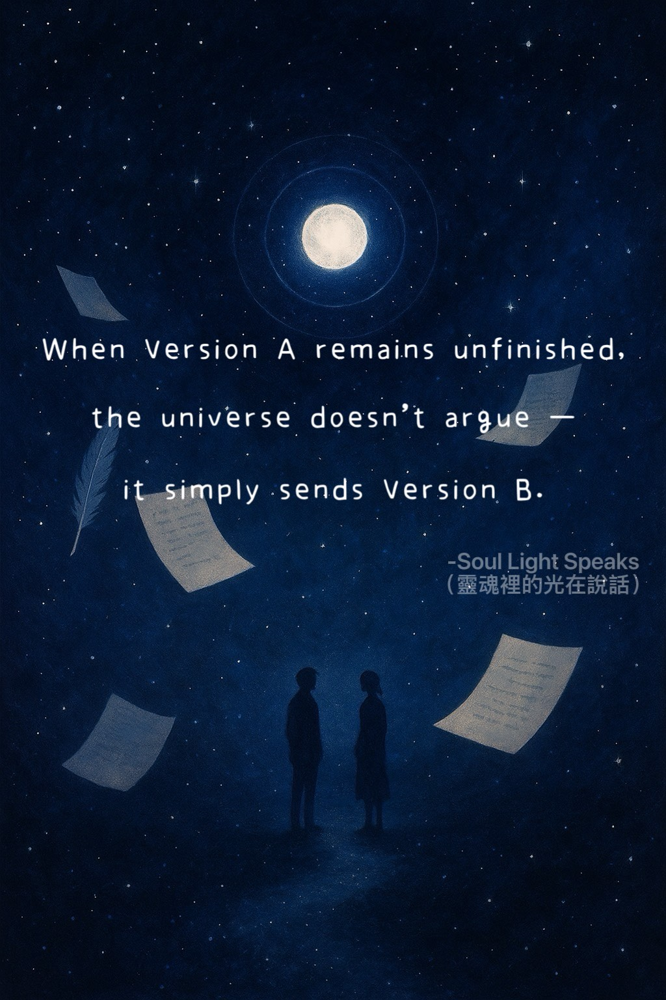
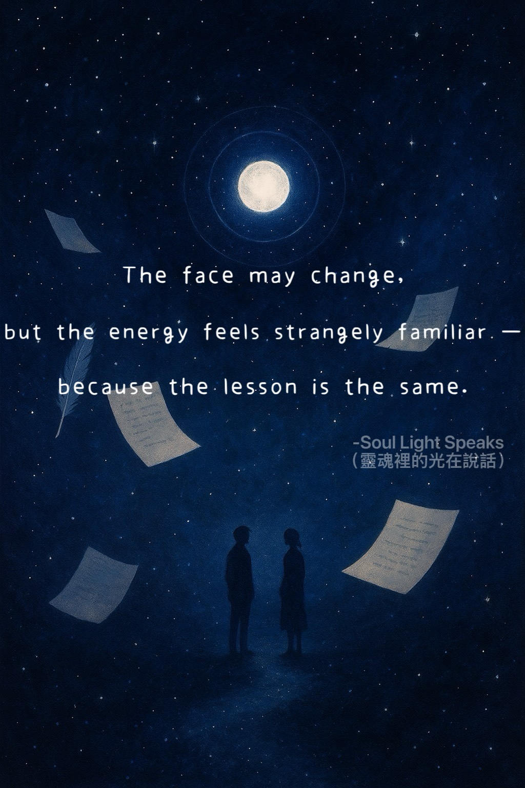
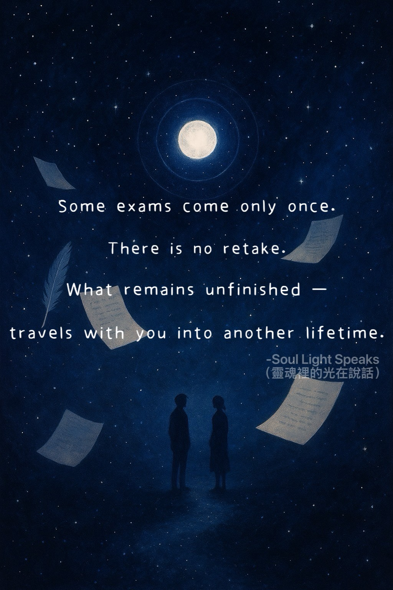

Your soul knew it was an exam.

the universe does not argue —
it simply sends Version B.

but the energy feels strangely familiar —
because the lesson is the same.

There is no retake.
What remains unfinished
travels with you into another lifetime.
a destined partnership are never easy.
They are meant to shape you,
not comfort you.
They mirror you.
They walk beside you.
Examiner and companion — all at once.
Not everyone appears by accident.
Some are rehearsals.
Some are the ones your soul agreed to meet
before you were born.
You thought it was love,
but your soul already knew it was a lesson.
Sometimes, the first version of the lesson does not work out.
If you cannot complete Version A,
the universe sends Version B.
The person may look different,
but their soul energy feels remarkably familiar.
Some lessons appear only once in a lifetime.
Fail them, and the unfinished part carries over into your next life.
Learning with a destined partner
is never simple.
Not every encounter is accidental.
Some people exist to teach you the same lesson in a different form.
Miss Version A, and Version B will arrive,
with a similar soul essence, giving you another chance.
Every encounter carries meaning.
They are your examiners,
and at the same time, the companions your soul promised to meet.